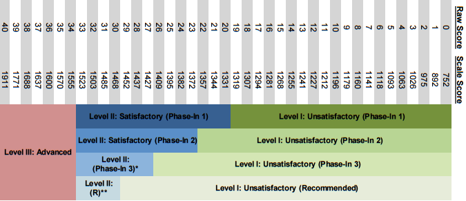

STAAR stands for the State of Texas Assessments of Academic Readiness. It is the set of tests a student going through the public school system in Texas must take throughout their academic career. You can see a list of those tests to the right.
STAAR replaced the TAKS testing system and it based on the state standards, the Texas Essential Skills and Knowledge (TEKS) which you can browse below.
Each year, after students take the tests the Texas Education Agency releases the data to the public. We have created this site in order to make it easier for the general public to browse and understand that data.
The state releases STAAR information in two places. The first is the Pearson Access system where you can download pdfs full of STAAR information for different levels. The second is the STAAR Aggregate Data System where you can download large spreadsheets for each campus, district or region as well as the state level.
TEA reports the data at four different levels:
Data at the student level is unavailable to the general public and subject to strict privacy laws including the Federal Family Educational Rights and Privacy Act (FERPA).
In the 2 tables at the bottom of this page you can see the different demographics and levels the STAAR system reports.
The names of the different achievement levels of STAAR results can be very confusing. Below is a conversion chart for the 3rd grade reading test as an example. That test has 40 questions and depending on the number correct, that score is deemed to be a certain level. This varies by test...you can find the conversion chart for each test here. And you can find a great guide written by TEA that goes into in depth explanations of what each standard level means (i.e. Phase-In 1) here.
TEA releases sample questions for each STAAR test every year. We have attached those below. And you can find them on the TEA site here. Please look through these to see how the numbers you will look at if you browse the data actually align with what happens in the classroom.
| Level | Test Questions | Answers |
|---|---|---|
| 3rd Grade Reading | Example Questions | Answers |
| 3rd Grade Math | Example Questions | Answers |
| 4th Grade Reading | Example Questions | Answers |
| 4th Grade Math | Example Questions | Answers |
| 4th Grade Writing | Example Questions | Answers |
| 5th Grade Reading | Example Questions | Answers |
| 5th Grade Math | Example Questions | Answers |
| 5th Grade Science | Example Questions | Answers |
| 6th Grade Reading | Example Questions | Answers |
| 6th Grade Math | Example Questions | Answers |
| 7th Grade Reading | Example Questions | Answers |
| 7th Grade Math | Example Questions | Answers |
| 7th Grade Writing | Example Questions | Answers |
| 8th Grade Reading | Example Questions | Answers |
| 8th Grade Math | Example Questions | Answers |
| 8th Grade Science | Example Questions | Answers |
| 8th Grade History | Example Questions | Answers |
| English I | Example Questions | Answers |
| English II | Example Questions | Answers |
| Algebra I | Example Questions | Answers |
| US History | Example Questions | Answers |
| Biology | Example Questions | Answers |
The test are designed to aling with the Texas Essential Knowledge and Skills (TEKS), which are the standards set by the state for what each student should know at the end of each school year.
| Level | Test Questions |
|---|---|
| {{demoGraphicGroup.variable}} | {{demoGraphicGroup.description}} |
| Level | Test Questions |
|---|---|
| {{category.variable}} | {{category.description}} |